Case study 03 Trust
Making AI-generated work trustworthy
AI can verify AI, but probabilistic judgment still requires conventional controls and accountable ownership.
Executive question
If AI produces more work, how do we know the work is actually good?
Human review does not scale with machine output. Asking another model whether something looks correct simply adds another uncertain judgment. The review process itself has to become an engineered, measurable capability.
Hypothesis
Trust cannot rest on model confidence.
AI can participate heavily in quality assurance, but the system also needs independent review, conventional validation, measurable reliability, and human authorization proportional to consequence.

What I designed
Independent model review inside a small, measurable control system.
The first review system was instrumented so failures in the work, reviewers, and surrounding machinery could be separated. Alongside it, I designed model-independent health checks, false-positive measurement, incident investigation, explicit acceptance targets, and verification after attempted repairs.
What happened
The machinery around the models failed more often than expected.
The first architecture processed about 1,700 review packets. An architecture review found that 64% of blocked outcomes came from state handling, orchestration, bookkeeping, or authorization—not the reviewed content. Only 73–85% of passing attempts reached a substantive verdict.
The second generation placed state and evidence in a much smaller conventional software core and constrained model responses to a checked structure. In the current repository snapshot, 329 measured attempts reached a content verdict 98.2% of the time, with a 54-second median, 121-second 95th percentile, and 1.8% harness-fault rate.
What failed
Observability was mistaken for control.
The environment became good at detecting problems but much worse at resolving them. Some red signals were false positives based on stale information, and at least one green signal was a false negative created when a model summarized a non-green report. Some automatic repair processes introduced failures of their own.
What changed
The system separated uncertain judgment, enforceable control, and human accountability.
- AI judgment: interpret, synthesize, propose, implement, and review.
- Conventional control: own state, identity, permissions, rules, external actions, and evidence.
- Human accountability: define objectives and risk tolerance, resolve consequential ambiguity, and remain responsible for outcomes.
Enterprise implication
Trustworthiness is a property of the complete operating system.
The question is not whether one model can be trusted. It is whether the organization has designed a system that remains trustworthy even though model behavior is probabilistic. That requires evaluation, independent review, deterministic checks, false-positive measurement, rollback, authorization, and evidence that the intended result actually occurred.
Evidence and limits
The GitHub repository contains the current measurement method, review observations, state model, monitoring design, and postmortem. These measurements describe an independent experimental environment, not enterprise service levels or the quality of every reviewed plan.